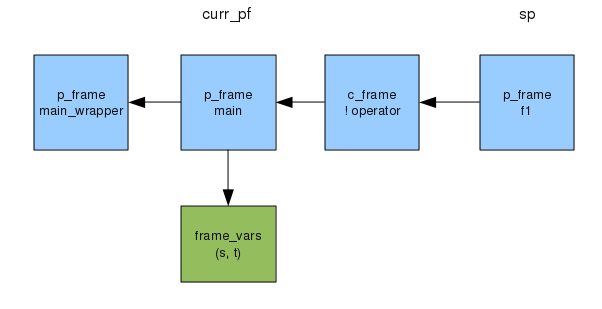
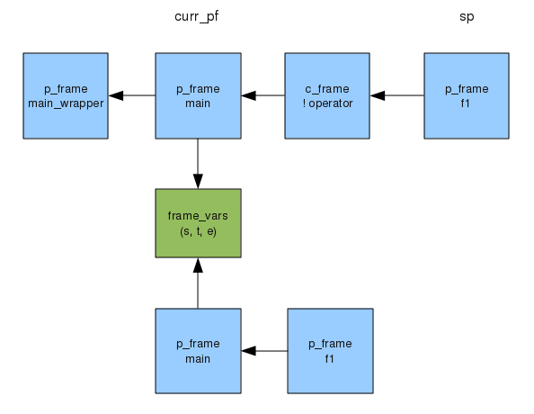

This page gives some details about how Object Icon is implemented, with particular reference to how the core virtual machine operates, which differs markedly to the traditional Icon implementation.
The Object Icon interpreter doesn’t use a conventional stack structure to implement procedure and generator calls. Rather, a chain of frames is used. Each frame represents an invocation of a procedure, method, function or operator invocation. Each co-expression represents a separate thread of execution, and thus each co-expression has its own chain of frames.
There are two types of frames, namely c_frames and p_frames. The former are for frames whose code body is implemented in C; the latter for those whose body is implemented in virtual machine instructions. The C structs for these two types are found in rstructs.h.
One interesting point to note about the frame chain is that the currently executing procedure’s frame isn’t necessarily at the end of the chain, as one might expect. Instead, frames which represent currently suspended generators may be present, and these will appear further along the chain from the present procedure. To illustrate this, consider the following program :-
import io
procedure f1()
suspend "hello" | "goodbye"
end
procedure main()
local s, t
s := "the quick brown fox"
every t := !s || f1() do
write(t)
endJust before the call to write, the state of the chain of frames will look like this :-

The leftmost frame is a frame used to “bootstrap” the interpreter and call the main method. Then comes the frame for main. Note that the local variables are kept in a separate structure. As explained below, these variables may be shared by frames in other co-expressions. This frame for main is the current frame, indicated by the global variable curr_pf. To the right of it are two frames representing the suspended generators used in the generator expression of the every loop. The first is a c_frame, since the ! operator is implemented by a C function. The other is another p_frame, since f1 is another procedure.
As described above, frames remain on the chain of frames even after they have produced a result, since they may be required to produce further results. This raises the question of when these frames are actually removed from the chain. In fact there are two points at which frames are removed. Firstly, when a frame is resumed, but fails. Clearly the frame cannot be resumed again, and all the frames to the right of the failing frame, and that frame itself, are discarded. Secondly, a frame (or frames) may be discarded by the unmark virtual machine instruction. These instructions are inserted into the VM code at points when, due to the semantics of Icon, a particular frame is no longer needed. For example, consider the following :-
if f() then ...Prior to invoking f(), a mark instruction is executed to note the top of the stack. If f() fails, its corresponding frame is simply discarded as described above. If it succeeds however, an unmark instruction is used to pop the stack upto the point of the corresponding mark instruction, thus discarding the now unwanted frame and any frames left by the invocation of f.
Each co-expression has its own chain of frames.
When a co-expression is created with the create operator, a new chain of frames is created. The single starting frame is a p_frame for the procedure in which the co-expression was created.
For example, in the following program
import io
procedure f1()
suspend "hello" | "goodbye"
end
procedure main()
local s, t, e
s := "the quick brown fox"
every t := !s || f1() do {
e := create f1()
@e
write(t)
}
endjust before the call to write, the state of the chain of frames will look as follows :-

The top row of blue boxes shows the &main co-expressions chain of frames, whilst the lower row shows the chain for e. Note that the base frame of e shares the local variable block with its creator. This means that changes to the local variables in the co-expression will be seen by the creator co-expression.
Note that the memory resources used by a new co-expression are very small, and grow (and shrink) dynamically as frames are allocated and popped.
Switching between co-expressions essentially just involves copying the values of curr_pf and ipc (the current VM program counter) to the old and from the new co-expression.
Note that, in contrast to the classic Icon implementation, no interpreter state is stored in the C stack. In other words, the interpreter loop (interp() in interp.r) is never called recursively. This means no low-level context-switch or C stack manipulation is necessary in order to switch co-expressions.
c_frames generate resultsIt is pretty obvious how a p_frame can generate results: just make that frame the curr_pf frame and continue executing. Eventually a suspend, fail or return will return us back (perhaps with a suspended value) to the calling p_frame. But for a c_frame, the situation is not so clear. The implementation of a c_frame is in C, and C does not easily support the idea of generating a sequence of results from a function. The solution is to store the C function’s local variables in the c_frame, rather than on the C stack in the normal way, so that they are available when the C function is resumed. It is also necessary to store the position in the C function reached at the last suspension, so that the C function can be resumed at the correct point. This can be achieved with labels and a switch statement. GCC supports computed gotos, and these are used instead if they are available.
Fortunately, this complexity is hidden from the C programmer, since the preprocessor rtt is used to translate code in its dialect of C, which includes suspend constructs, into code using the technique described above.
p_framesSome operations require special p_frames to be pushed onto the chain of frames. These run VM instructions like normal p_frames, but the VM code is hand-written rather than being translated from user source code. A simple “assembler” is provided, called iasm, and this can be found in the oix directory. The source files have the ending “.in”. A few VM instructions are provided which are only used by these special p_frames, most notably Op_Custom, which calls an arbitrary given C function (effectively providing an instruction which can do anything).
An example of a situation where an internal p_frame is used is object creation. This involves invoking the class’s new method, as well as perhaps its static init method, and any of its parent classes’ init methods. Without the use of an internal p_frame it would be necessary to recursively call the main interpreter loop. But we cannot do that, since we don’t want any interpreter state to exist on the C stack.
The classic Icon implementation uses a field table to map fields to record offsets. For example, in the expression rec.x, if x was field number 10 and rec was of type number 20 then entry (10, 20) in the field table would give the offset of the field x in rec.
The problem with the field table technique is that it grows to an unmanageable size as the number of records and fields increases. If the number of records and fields double, the field table quadruples in size.
For this reason, Object Icon takes a different approach to field lookup, namely inline caching. In this scheme, every field access instruction is compiled with a two-word gap in the generated code, initially set to zero. These two fields constitute the inline cache for that particular instruction. The first time the field instruction is executed, we lookup the requested field in the class using binary search, in order to determine the offset. Then we store in the cache two things, namely the type of the object, and the calculated offset. The field is of course constant for that instruction. Next time the instruction is executed, we compare the type of the object with the last calculated type. If they are the same, we can use the last calculated offset again, so we are saved a binary search. Otherwise, we perform the search and store the new values. Typically, the types match about 90% of the time.
The inline cache is also used to cache the result of the accessibility check of the field, since the same field in the same class referenced from the same point must always give the same result. The value stored in the cache indicates whether the field is fully accessible, or just read-only.
Whenever possible, case statements use a lookup table to provide near constant-time selection of case clauses. This is not always possible, since Icon provides a very general case syntax, with arbitrary expressions as the selectors. However, the translator tries to determine whether all of the selectors in a case statement are in fact constants, or expressions made up of constants, which won’t change during the course of execution. This is the case for the vast majority of case statements. If it is, then an optimization is applied; if not then the conventional approach is used instead, namely evaluating each selector in turn and checking for a match using the identity operator (===).
The case optimization works as follows. The first time the case statement’s code is executed by the interpreter, a tcaseinit instruction is executed. This creates a regular Icon table structure, and stores it in an internal location, inaccessible to the program itself. Then instructions are executed to populate this table, by evaluating the various selector expressions. As each expression is evaluated, each result is used by a tcaseinsert instruction to insert a key and entry into the internal table. The key is the value generated by the selector, and the entry is the label of the clause (the address of the code implementing the clause). Each selector may generate several values for insertion; for example
...
case ... of
...
!"abc" : { ... }
...
...would insert three entries into the internal table, namely keys "a", "b" and "c", each with the same entry value, being the label of the clause.
After the initialization code has been completed, and on every subsequent execution, a tcasechoose instruction is executed. This looks up the value of the case expression in the internal table, and then jumps to the resulting label.
If there is a default clause in the case statement, then the internal table has a default value pointing to its clause, otherwise it points to the failure label of the case statement, ie the piece of code to handle the case statement’s failure.
If the translator is run with verbose level > 3, then a message is produced to indicate whether or not the case optimization is being applied for each particular case statement.
In contrast to classic Icon, .u files are in a binary format. Further, they bear no relation to the final output code format, and they retain the original nested structure of the original source code. They are restored into a tree-like data structure (see ltree.h) at the linking phase.
During linking, simple optimisations are performed on the code trees. These include constant folding and dead code elmination.
The linking stage of oit creates an in-memory data structure, which retains the original tree-like structure of the source code. This data structure is then transformed into the output code using the process described in this paper :- http://www.cs.arizona.edu/icon/jcon/gde97.pdf.
This technique is also used in the Jcon implementation of Icon (see http://www.cs.arizona.edu/icon/jcon/). In fact, the file ir.c is largely based on Jcon’s irgen.icn. The most significant difference is the addition of “mark” and “unmark” instructions, which are used for manipulation of the frame chain, as described above.
The “icode” file contains a translated and linked program, and is loaded into memory en-bloc at runtime. One problem that arises is the fixing up of pointers inside the loaded icode. For example, there will be string descriptors, which point into the block of string data. These must be adjusted so that they point to the correct memory location after loading. Normally, this involves a scan of the code and data in the icode file to relocate all addresses. However, this scan can be avoided if the address of the icode at runtime can be predicted at translation time. Then, the addresses will be correct upon loading.
This is quite easy to achieve with the mmap function on Unix, or VirtualAlloc on Windows. These functions allow a program to request an allocation at a particular address. oit chooses an address which is typically unused (on 64 bits the choice is enormous of course); this address may be adjusted with oit’s -b option. The address is stored in the Base field of the header, and all pointers in the icode file are set relative to this value. At runtime, this address is used to request a block of memory with mmap or VirtualAlloc. Then, the difference between the allocated address and the Base address is calculated, and stored in the Offset field of the progstate structure. This number of bytes must be added to each pointer in the icode after loading.
Normally, Offset will be zero, and this means that all of the pointers in the icode will already be correct, and a full scan can be avoided. Some pointers still need to be set; for example pointers to native method blocks. The code for both full and reduced scan are in the resolve() function in init.r.
This optimisation is particularly helpful for programs invoked many times in a shell program. One example is the test script dotests.sh in the lib/xml directory. The above optimisation reduces that script’s runtime by about 20%.